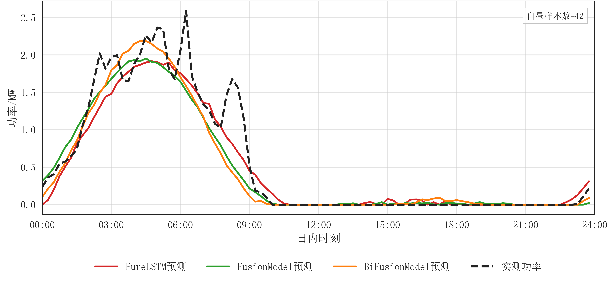
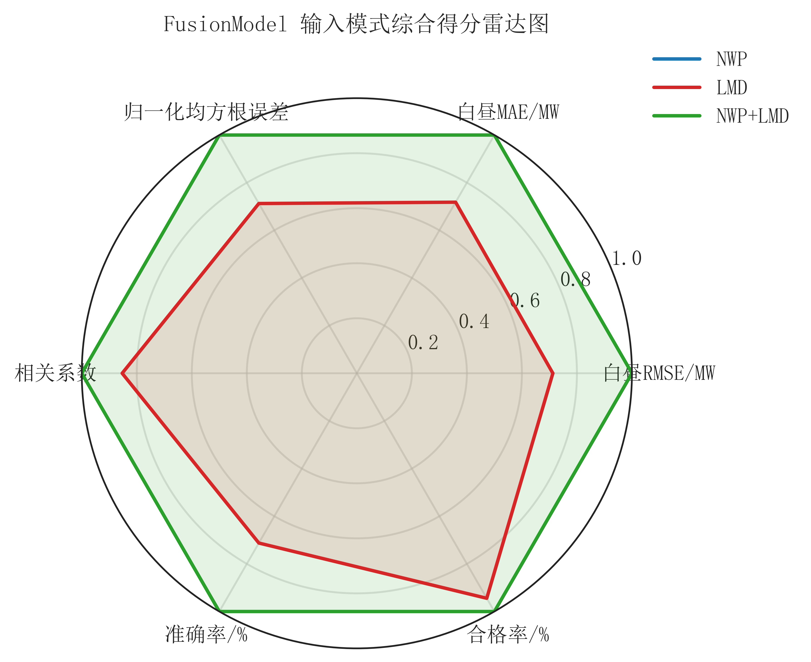

历史功率基线
FusionModel
E_rmse 0.0833 · C_R 91.67% · Q_R 98.07%
无天气预报时的保底链路
项目围绕站点历史功率、NWP 预报和 LMD 局地气象数据建立日前预测流程，用于发电计划编制、调度复盘、模型维护和质量审计。
指标直接来自仓库已保存的 CSV。E_rmse 越低越好，C_R 与 Q_R 越高越好；统计口径为白昼时段。
同一套 outputs 可以服务不同工程角色。点击切换关注点，静态页保留最关键的使用语境；完整交互请运行本地工作台。
静态页保留最适合快速查看的两张图；完整 PNG、HTML 交互图和 CSV 明细请在本地工作台或仓库 outputs 中查看。


项目不是静态图表堆叠，而是从数据、模型、指标到展示入口的一条可复现链路。
公开页保留最核心的术语解释，完整说明见仓库中的名词解释文档。
GitHub Pages 只发布静态项目页，不能运行 Streamlit。完整软件界面需要在本地克隆仓库后启动。
pip install -r 2025\requirements.txt
python -m streamlit run 2025\app.pypython 2025\tools\project_health_check.py
python -m unittest discover -s tests -q
python 2025\run_project.py --show all这些链接指向公开仓库中的源文件。Pages 页面只保留静态摘要，详细复现和维护记录以仓库为准。